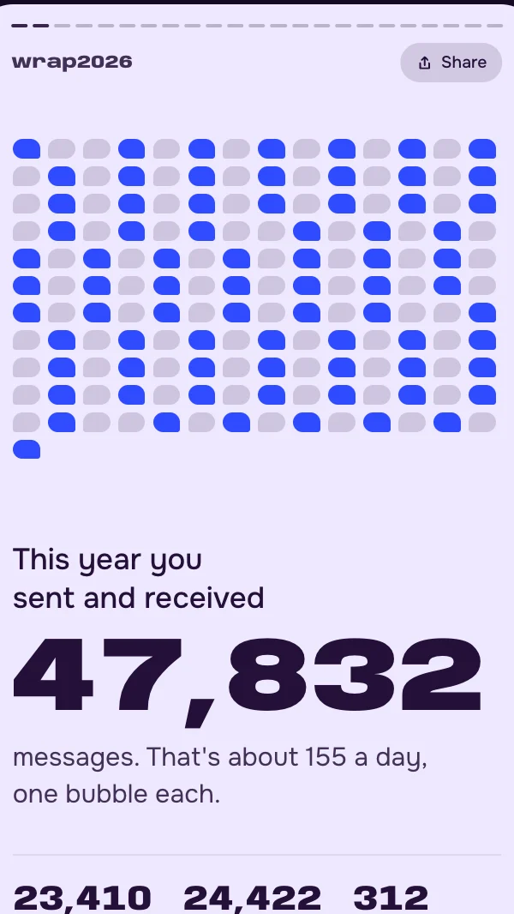
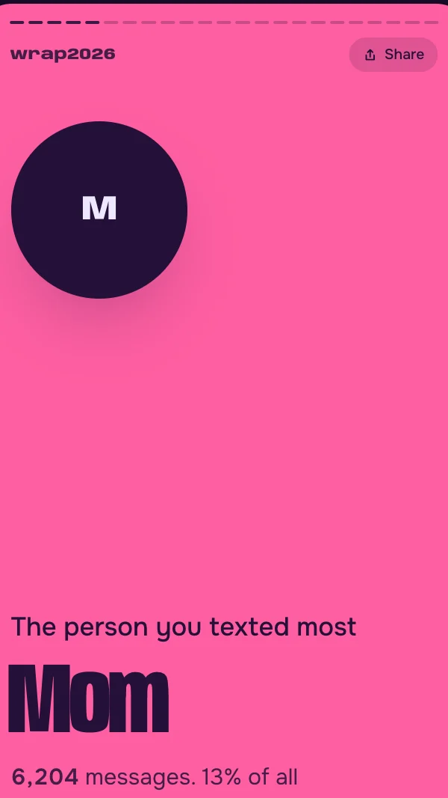
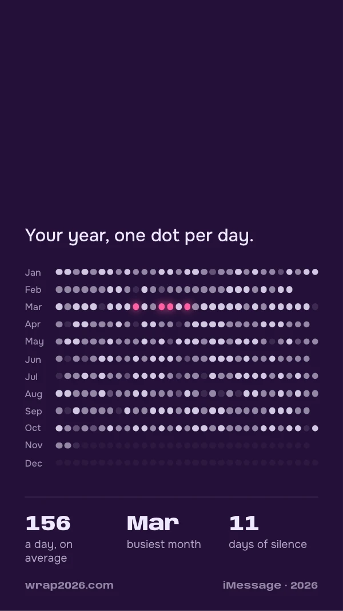
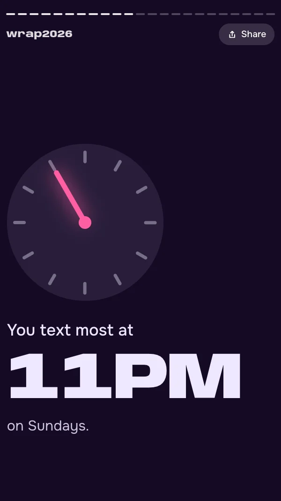
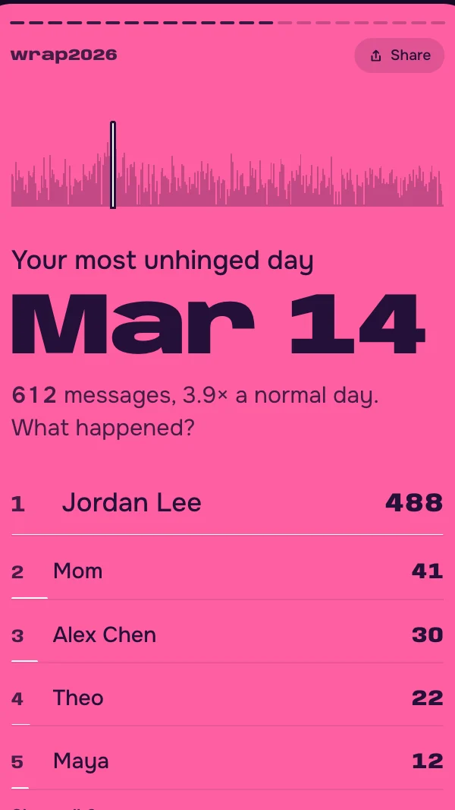
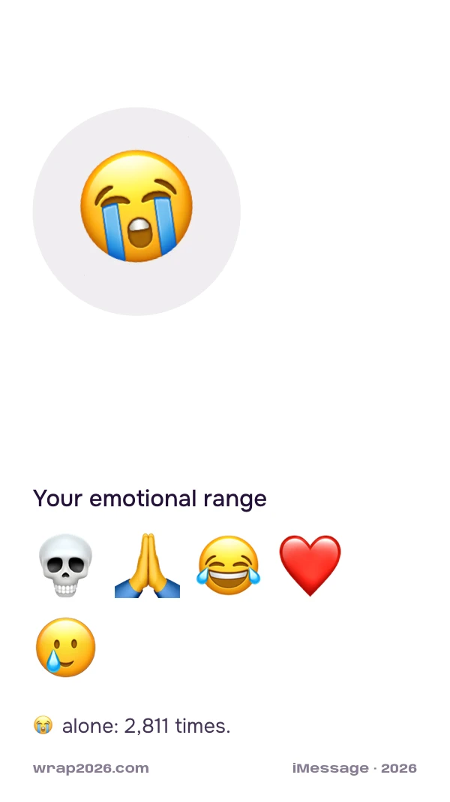
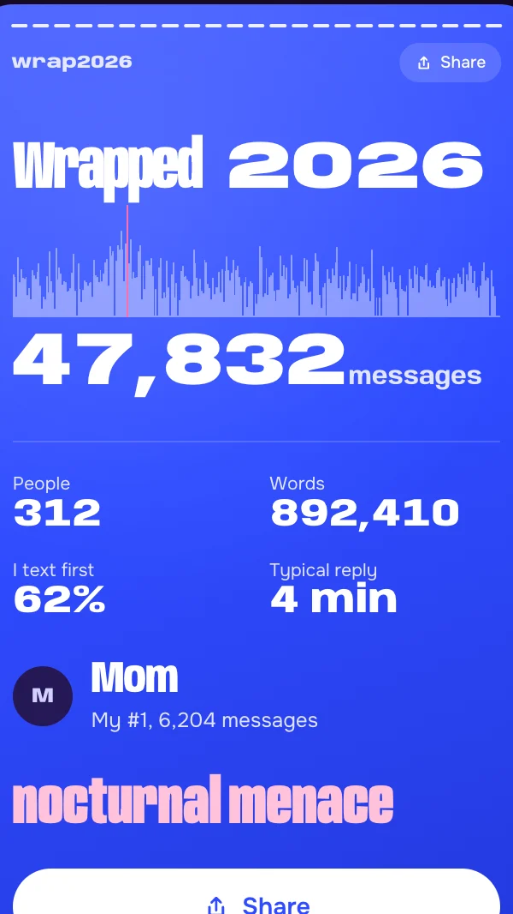

Wrapped2026
Your year in texts, across iMessage and WhatsApp. Who you talk to most, how fast you reply, and what that says about you.
Make my Wrapped 2026. Download https://wrap2026.com/combined_wrapped.py. Before running it, do a quick check: search it for network calls, file writes or deletes, and commands it runs, then tell me in 3 short bullets what it reads, what it writes, and whether it sends anything anywhere. It should only read my Messages, WhatsApp, call history and Contacts data on this Mac (Contacts is for names), and make no network requests, in the script or in the page it writes. If it checks out, run it with python3. If it can’t get access, tell me how to turn on Full Disk Access for this app. Don’t open my messages or the wrap file yourself.
Paste it into Claude Code or Codex on your Mac.
100% local. Nothing leaves your Mac. How it works
It runs on your Mac. Text yourself the link and open it there.
Text it to myself100% local. Nothing leaves your Mac. How it works
Twenty slides about you.
Tap through it like a story. Share the best ones to the group chat and regret it.







Real slides, made-up people. Every slide shares as a 1080×1920 image for your story.
Two minutes, one prompt.
Pick what you want wrapped. Claude Code or Codex reads the script, checks it, and runs it on your Mac. Nothing to install.
Both apps in one wrap. Contacts are matched across them, so Mom is one person, not two.Works with only one app installed too. This is the one most people should run.
Copy the prompt
Make my Wrapped 2026. Download https://wrap2026.com/combined_wrapped.py. Before running it, do a quick check: search it for network calls, file writes or deletes, and commands it runs, then tell me in 3 short bullets what it reads, what it writes, and whether it sends anything anywhere. It should only read my Messages, WhatsApp, call history and Contacts data on this Mac (Contacts is for names), and make no network requests, in the script or in the page it writes. If it checks out, run it with python3. If it can’t get access, tell me how to turn on Full Disk Access for this app. Don’t open my messages or the wrap file yourself.
Paste it into Claude Code or Codex on your Mac
It downloads the script, reads it to check it’s safe, then runs it. Say yes when it asks to.
Turn on Full Disk Access if asked
Your Mac keeps messages locked by default. In System Settings, Privacy & Security, Full Disk Access, turn on the app you’re using: Terminal, iTerm, Ghostty or Codex. Reopen it and paste the prompt again.
Watch it open
When it’s done, your wrap opens in your browser. Tap Share on any slide to post it.
Prefer Terminal? Run it yourself
Turn on Full Disk Access for Terminal first, then paste this.
curl -sO https://wrap2026.com/combined_wrapped.py && python3 combined_wrapped.pyJust iMessage and SMS, from the Messages app on your Mac.Needs Messages in iCloud turned on so your Mac has your full history.
Copy the prompt
Make my Wrapped 2026. Download https://wrap2026.com/imessage_wrapped.py. Before running it, do a quick check: search it for network calls, file writes or deletes, and commands it runs, then tell me in 3 short bullets what it reads, what it writes, and whether it sends anything anywhere. It should only read my Messages, WhatsApp, call history and Contacts data on this Mac (Contacts is for names), and make no network requests, in the script or in the page it writes. If it checks out, run it with python3. If it can’t get access, tell me how to turn on Full Disk Access for this app. Don’t open my messages or the wrap file yourself.
Paste it into Claude Code or Codex on your Mac
It downloads the script, reads it to check it’s safe, then runs it. Say yes when it asks to.
Turn on Full Disk Access if asked
Your Mac keeps messages locked by default. In System Settings, Privacy & Security, Full Disk Access, turn on the app you’re using: Terminal, iTerm, Ghostty or Codex. Reopen it and paste the prompt again.
Watch it open
When it’s done, your wrap opens in your browser. Tap Share on any slide to post it.
Prefer Terminal? Run it yourself
Turn on Full Disk Access for Terminal first, then paste this.
curl -sO https://wrap2026.com/imessage_wrapped.py && python3 imessage_wrapped.pyJust WhatsApp, from the WhatsApp desktop app.The desktop app only has what it has synced. Open it and let it catch up first.
Copy the prompt
Make my Wrapped 2026. Download https://wrap2026.com/whatsapp_wrapped.py. Before running it, do a quick check: search it for network calls, file writes or deletes, and commands it runs, then tell me in 3 short bullets what it reads, what it writes, and whether it sends anything anywhere. It should only read my Messages, WhatsApp, call history and Contacts data on this Mac (Contacts is for names), and make no network requests, in the script or in the page it writes. If it checks out, run it with python3. If it can’t get access, tell me how to turn on Full Disk Access for this app. Don’t open my messages or the wrap file yourself.
Paste it into Claude Code or Codex on your Mac
It downloads the script, reads it to check it’s safe, then runs it. Say yes when it asks to.
Turn on Full Disk Access if asked
Your Mac keeps messages locked by default. In System Settings, Privacy & Security, Full Disk Access, turn on the app you’re using: Terminal, iTerm, Ghostty or Codex. Reopen it and paste the prompt again.
Watch it open
When it’s done, your wrap opens in your browser. Tap Share on any slide to post it.
Prefer Terminal? Run it yourself
Turn on Full Disk Access for Terminal first, then paste this.
curl -sO https://wrap2026.com/whatsapp_wrapped.py && python3 whatsapp_wrapped.pyPhone, FaceTime and WhatsApp calls. Minutes on the phone, who you call most, and who never calls back.Your Mac only has the calls your iPhone shared with it, so this wrap can miss part of the year.
Copy the prompt
Make my Wrapped 2026. Download https://wrap2026.com/call_wrapped.py. Before running it, do a quick check: search it for network calls, file writes or deletes, and commands it runs, then tell me in 3 short bullets what it reads, what it writes, and whether it sends anything anywhere. It should only read my Messages, WhatsApp, call history and Contacts data on this Mac (Contacts is for names), and make no network requests, in the script or in the page it writes. If it checks out, run it with python3. If it can’t get access, tell me how to turn on Full Disk Access for this app. Don’t open my messages or the wrap file yourself.
Paste it into Claude Code or Codex on your Mac
It downloads the script, reads it to check it’s safe, then runs it. Say yes when it asks to.
Turn on Full Disk Access if asked
Your Mac keeps messages locked by default. In System Settings, Privacy & Security, Full Disk Access, turn on the app you’re using: Terminal, iTerm, Ghostty or Codex. Reopen it and paste the prompt again.
Watch it open
When it’s done, your wrap opens in your browser. Tap Share on any slide to post it.
Prefer Terminal? Run it yourself
Turn on Full Disk Access for Terminal first, then paste this.
curl -sO https://wrap2026.com/call_wrapped.py && python3 call_wrapped.pyA written portrait of each of your top 25 people: inside jokes, how things changed, the quotes that sum it up.Claude Code reads the conversations on your Mac and writes the summaries. Takes about 10 minutes. This is the only wrap that reads message text.
Install Claude Code
Get it at claude.com/claude-code if you don’t have it.
Start it without permission prompts
It writes 25 files, so it would ask 25 times otherwise.
claude --dangerously-skip-permissionsPaste this prompt
Make my People Wrapped 2026. Download https://wrap2026.com/people_wrapped.py. Before running it, do a quick check: search it for network calls, file writes or deletes, and commands it runs, then tell me in 3 short bullets what it reads, what it writes, and whether it sends anything anywhere. If it checks out, run python3 people_wrapped.py and follow the steps it prints. If it can’t get access, tell me how to turn on Full Disk Access for this app.
Turn on Full Disk Access if asked
Your Mac keeps messages locked by default. In System Settings, Privacy & Security, Full Disk Access, turn on the app you’re using: Terminal, iTerm or Ghostty. Reopen it and paste the prompt again.
Nothing leaves your Mac.
The script reads the message history already on your Mac, makes one web page, and opens it. That’s all it does.
Paste it into Claude or ChatGPT and ask if it’s safe.
- What it reads
- When you texted, who with, and how much. Word and emoji totals are counted inside the database. Your messages are never read out, kept or shown. Contacts is read only to show names instead of numbers.
- Network
- The script makes no network calls, so nothing reaches me or any server. Your wrap is one self-contained file: the fonts and the image-saving code are inside it, and it tells your browser to block every network request. No uploads, no analytics.
- Dependencies
- Python’s standard library. Nothing to install.
- With an agent
- Claude Code or Codex only runs the script. It sees the script and its progress lines, which are counts, never names or messages. The prompt tells it not to open your messages or your wrap.
- Output
- One web page (an HTML file), saved next to the script. It has your contacts’ names, so share slides, not the file. Delete it whenever you like.
- The exception
- People, with Claude reads message text so Claude Code can write about it. It runs in your own Claude Code session.
Questions.
Is it free?
Yes. It’s free and open source under the MIT license. The code is on GitHub.
Does it work on iPhone, Android or Windows?
No. It runs on a Mac, because that’s where Messages and WhatsApp keep a copy of your history. On your phone, send yourself the link and open it on your Mac.
Does it upload my messages?
No. The script runs on your Mac and makes no network calls. It makes one web page and opens it in your browser. Nothing is sent anywhere unless you share a slide.
Why does it need Full Disk Access?
macOS locks the Messages and WhatsApp history so apps can’t read it without your permission. Full Disk Access is that permission. You can turn it off again when you’re done.
Do I need Claude Code or Codex?
No. They make it easier, because they check the script before running it. You can also paste one Terminal command yourself.
My numbers look low. Why?
Your Mac only has what it has synced. For iMessage, turn on Messages in iCloud. For WhatsApp, open the desktop app and let it catch up. Then run it again.
It’s early in the year. Will it still work?
Yes. If you don’t have many 2026 messages yet, it uses 2025 instead.